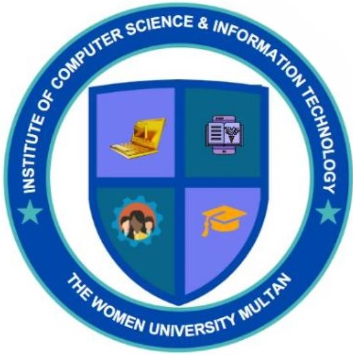

The Department of Computer Science and Information Technology aims to equip students with strong theoretical foundations and practical skills in computing. Our programs focus on problem-solving, programming, software development, artificial intelligence, and data management.
Preparing graduates to excel in modern technological environments through a blend of innovation, research, and industry-oriented learning, the department fosters creativity and professionalism among future computer scientists and IT professionals.